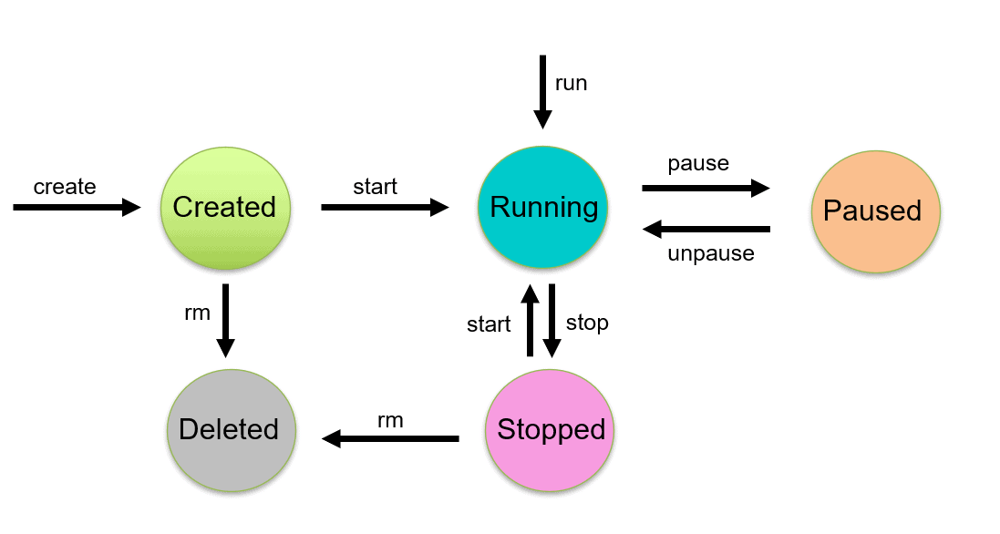

mit Thomas Hanke
Author: Robin Heydkamp, robin.heydkamp@itzbund.de
| Link | Beschreibung |
|---|---|
| Hub.Docker | Hier holt sich Docker seine Images |
| Semantic Versioning | Standardisierung bei Versionierungen |
| GitIgnore | Sammlung an git.ignore-Dateien |
| Red Hat Open Shift Local | Open Shift lokal ausprobieren. Developer Account benötigt |
Docker - Podman
Kubernetes - Open Shift - Swarm
Image - Container
YAML - Namespace - Skalierung
"Security"Docker läuft als Root-Daemon, wenn ich also Docker aufrufe, läuft der Container als Root. Podman ist "rootless". Die Container laufen also mit den Rechten, mit denen ich sie starte.
Bei Fork wird das Programm in einem neuem Prozess gestartet. Sollte es fertig sein, oder beendet werden, übernimmt der "Parent"-Prozess.
Bei Exec wird das Programm in gleichen Prozess gestartet. Sollte das Programm dann geschlossen werden, gibt es kein "Parent"-Prozess der übernehmen könnte.
Semantic Versioning dient der eindeutigen Versionierung von Software.
Beispiel: ls -a /etc/
Podman läuft ein wenig anders, mit Sub und oder auch Sub Sub Kommandos.
Beispiel: podman container attach --help
Kommando: podman run hello-world
Podman versucht direkt das Image runterzuladen und es als Container auszuführen. Bei erneutem Ausführen des Containers ist das Image bereits runtergeladen und muss nicht erneut runtergeladen werden. Podman versucht den Alias "hello-world" aufzulösen und greift dabei z.B. auf die Datei /etc/containers/registries.conf.d/000-shortnames.conf zu.
| Kommando | Wirkung |
|---|---|
| cat /home/User/.local/share/containers | Hier speichert Podman seine Images |
| podman container ls | Zeigt den Status aller Container die aktiv sind. |
| podman container ls -a | Infos über ALLE Verwendeten Container an. Auch die, die geschlossen sind. |
Wir starten ein interaktives Alpine-Image in einem neuem Pseudoterminal
| (Sub) Kommando | Wirkung |
|---|---|
| podman run | ein Podman Image starten |
| -i | interactive, Ein und Ausgabe übertragen |
| -t | terminal, Pseudoterminal um die Ausgabe irgendwo anzuzeigen |
| alpine | Nutze das Image alpine |
Wir verknüpfen unser bash mit dem Container. Wir springen quasi hinein und können diese auch Beenden. Der Container-Name lässt sich mit podman container ls rausfinden.
Namespaces nutzen wir um eindeutige Interpretationen bzw. Definitionen zu ermöglichen. Ein Container erhält seinen eigenen Namespace in welchem er arbeiten kann. Im Namespace "Schmied" steht der Befehl "baue ein Schloss" für eine abschließbare Kette. Im Namespace "Königin" erstellt der gleiche Befehl ein königliches Schloss mit Ballsaal und Thron.
Mit cgroups (Control-Groups) lässt sich einschränken auf wie viele Ressourcen ein Container zugreifen darf. Zum Beispiel Prozessorleistung, Festplattenspeicher bis hin zu Lese/Schreibgeschwindigkeiten und Verwendung von Inodes.
Es sollte immer eine Begrenzung des Arbeitsspeicher und der sonstigen Hardware geben, damit der Container nicht den kompletten Host übernimmt.
Ein Container ist nur eine Hülle. Arbeiten tut der "Prozess" selbst. Also Docker oder Podman.
Wir haben über Registrys geredet :-)
Jeder Container hinterlässt Logs. Diese können im nachhinein beobachtet werden, aber auch zur Laufzeit.
z.B. mit:
Wir haben bereits einen Container erzeugt und gestartet (run) und können ihn über "podman start" und "podman stop" starten und stoppen.

| Kommando | Wirkung |
|---|---|
| man podman-run | grep detached | Gibt alle Man Pages für "podman run" an und filtert nach dem Keyword "detached" |
| podman exec -it $CONTAINER-NAME ls | Springt in den Container (interactive, terminal) und führt das Kommando ls aus |
| podman rm $CONTAINER-NAME | Entfernt gestoppte Container inkl. aller Logs |
| Kommando | Wirkung |
|---|---|
| podman run --rm -it alpine | Führt den Container erst aus, löscht ihn aber, nachdem er beendet wurde. |
| podman container prune | Alle Container (die nicht laufen) löschen |
| podman image rm nginx:latest | Löscht das Image von "nginx:latest" |
| Kommando | Wirkung |
|---|---|
| podman run --name $CONTAINER-NAME -it alpine | Startet einen Container und vergibt einen eigenen Namen |
| podman rename $CONTAINER-NAME $NEW-CONTAINER-NAME | einen laufenden Container umbenennen. |
Die Grundlagen der Virtualisierung.
Pets werden gepflegt, Cattle wird "weggeschmissen und neu geholt".
Volumes sind Speicher auf die verschiedene Container zugreifen können
Benutzung: podman run --volume $VOLUME-NAME:/mnt --rm --name volume_test -it alpine
| (Sub) Kommando | Wirkung |
|---|---|
| podman run | Kommando für Podman |
| --volume $VOLUME-NAME:/mnt | Benutze das erzeugte Volume, und binde es unter /mnt ein. |
| --rm | LÖSCHE den Container, nachdem er beendet wurde |
| --name volume_test | Benenne den Container 'volume_test' |
| -it | interactive, pseudoterminal |
| alpine | Nutze das Image alpine |
Binds sind Speicher, die, im Gegensatz zu Volumes, vom Host gemanaged werden und damit etwas "interaktiver" sind. Sie werden fast identisch eingebunden. Statt dem Volume-Namen verwenden wir den Ordner-Namen
Benutzung: podman run --volume /home/User/Ordner1/:/mnt:z --rm --name volume_test -it alpine
| (Sub) Kommando | Wirkung |
|---|---|
| podman run | Kommando für Podman |
| --volume /home/User/Ordner1/:/mnt:z | Binde das designierte Verzeichnis 'Ordner1' in dem Container unter /mnt ein. Das z-Flag erlaubt die Nutzung auch unter SE-Linux und das der Container auf das Verzeichnis zugreifen darf. |
| --rm | LÖSCHE den Container, nachdem er beendet wurde |
| --name volume_test | Benenne den Container 'volume_test' |
| -it | interactive, pseudoterminal |
| alpine | Nutze das Image alpine |
Wir haben tmpfs mit einem halben Satz angesprochen... ( ͡° ͜ʖ ͡°)_/¯
Wir können ein nginx-Image starten, der geöffnete Port (80) wäre allerdings nicht erreichbar. Wir wollen den Freigegebenen Port vom Host aufrufen können.
podman run -dit -p 8080:80 nginx
| Kommando | Wirkung |
|---|---|
| podman run | Kommando für Podman |
| -dit | detached, interactive, terminal |
| -p 8080:80 | Port öffnen: Host 8080 auf Container 80 |
| nginx | Nutze das Image nginx |
Beispiel: podman run -dp 8080:80 -v /home/User/Ordner1:/usr/share/nginx/html --name Port_Test_Container nginx
| (Sub) Kommando | Wirkung |
|---|---|
| podman run | Kommando für Podman |
| -dp 8080:80 | detached, Port öffnen: Host 8080 auf Container 80 |
| -v /home/User/Ordner1:/usr/share/nginx/html | Binde den Ordner Ordner1 auf /usr/share/nginx/html/ ein |
| --name Port_Test_Container | Vergib einen schönen, sauberen Namen |
| nginx | Nutze das Image nginx |
"Volumes": {
"/var/lib/mysql": {}
},wir finden raus, dass das Image ein Volume braucht. Defaultmäßig würde der Container dies selber erzeugen. Wir können dies aber auch selber machen:
podman volume create mysql_volume - und anschließend dem Container mitgeben mit: podman run -it --volume mysql_volume:/var/lib/mysql mysql
Trotzdem bekommen wir die Fehlermeldung:
You need to specify one of the following as an environment variable:
- MYSQL_ROOT_PASSWORD
- MYSQL_ALLOW_EMPTY_PASSWORD
- MYSQL_RANDOM_ROOT_PASSWORDManche Container benötigen zusätzliche Variablen. Jede Variabel muss separat beim Aufruf hinzugefügt werden.
| (Sub) Kommando | Wirkung |
|---|---|
| podman run | Kommando für Podman |
| -it | interactive, pseudoterminal |
| --volume mysql_volume:/var/lib/mysql | Verwende das (vorher angelegte) Volume "mysqsl_volume" und binde es unter "/var/lib/mysql ein |
| -e MYSQL_ROOT_PASSWORD=root | Umgebungsvariable für den Container |
| -e MYSQL_ALLOW_EMPTY_PASSWORD=true | Umgebungsvariable für den Container |
| -e MYSQL_RANDOM_ROOT_PASSWORD=root | Umgebungsvariable für den Container |
| mysql | Nutze das Image mysql |
Über ein Netzwerk können Container untereinander kommunizieren und sich gegenseitig als "Server" wahrnehmen.
podman network create net_wordpress - Erzeugt ein Containernetzwerk mit der Bezeichnung: "net_wordpress"
podman run -d \
--name mariadb-test \
--network net_wordpress \
-e MYSQL_DATABASE=wp \
-e MYSQL_USER=wpuser \
-e MYSQL_PASSWORD=geheim \
-e MYSQL_ROOT_PASSWORD=root \
-v vol_wordpress:/var/lib/mysql \
mariadbpodman run -d --name pma \
--network net_wordpress \
-p 8080:80 \
-e PMA_HOST=mariadb-test \
phpmyadminMit podman-compose können wir über eine Composer-Datei ein komplettes Setup aufbauen. Datenbanken, Appserver und Webserver inkl. Netzwerk, Volumes und mehr.
podman-compose muss i.d.R. nachinstalliert werden da es nicht im standardmäßigem Podman-Paket vorhanden ist. Z.B. mit sudo dnf install podman-compose
version: '3.8'
services:
db:
image: docker.io/library/mysql:8.0
container_name: wordpress-db
# restart: always ## Funktioniert nur unter Docker, da Docker einen Deamon benutzt.
environment:
MYSQL_DATABASE: ${DB_NAME}
MYSQL_USER: ${MYSQL_USER}
MYSQL_PASSWORD: ${MYSQL_PASSWORD}
MYSQL_ROOT_PASSWORD: ${MYSQL_ROOT_PASSWORD}
volumes:
- db_data:/var/lib/mysql
wordpress:
image: docker.io/library/wordpress:latest
container_name: wordpress-app
environment:
WORDPRESS_DB_HOST: db:3306 # Name des Services (Zeile 4) + Port
WORDPRESS_DB_USER: ${MYSQL_USER}
WORDPRESS_DB_PASSWORD: ${MYSQL_PASSWORD}
WORDPRESS_DB_NAME: ${DB_NAME}
ports:
- "8080:80"
depends_on:
- db
volumes:
db_data: # volume für die Datenbank, Default reicht aus.compose.yml - Datei
Secrets und sensitive Daten (Hier als Variable mit ${XXX} gekennzeichnet) sollten ausgelagert werden. Z.B. in eine .env Datei. Diese Datei wird dann nicht in der Versionierung (z.B. Git) aufgenommen und/oder bekommt spezielle Zugriffsberechtigungen.
DB_NAME= wordpress
MYSQL_USER= wpuser
MYSQL_PASSWORD= wppassword
MYSQL_ROOT_PASSWORD= safe.env - Datei
| Kommando | Wirkung |
|---|---|
| sudo dnf install podman-compose | Podman-Compose installieren (Debian basiertes OS) |
| podman-compose up | Podman anhand der Compose-Datei starten. Der Befehl muss im selben Ordner ausgeführt werden wie die composer.yml ist. |
| podman-compose down | Die Sitzung wieder runterfahren. |
| podman-compose stats | Statistiken über alle "composierten" Session auslesen. |
| podman-compose --env-file prod | Wir laden eine alternative env.File mit dem Namen "prod", Default: .env |
| config | Wir schauen uns die Konfigurationsdatei (composer.yml) damit an. Variablen werden dabei schon aufgelöst. |
Wir erzeugen eine neue Datei
FROM docker.io/library/nginx:alpine # Grundlegendes Image
COPY index.html /usr/share/nginx/html/index.html # Kopiere die index.html in den nginx Ordner
EXPOSE 80 # Öffne Port 80 (wir müssen diesen trotzdem beim aufrufen des Containers angeben)containerfile - Datei
In dieser haben wir alle Inhalte unseres Images einmal niedergeschrieben. Nun muss daraus noch ein Image erstellt werden:
Kommando: podman build -t [FQCN]/mein_image .
| (Sub) Kommando | Wirkung |
|---|---|
| podman build | Podman soll ein Image "bauen" |
| -t [FQCN]/mein_image | Wir hinterlegen einen Tag für unser neues Image damit wir dieses später auch benennen und starten können z.B. "itzbund/podman/mein_image" |
| . | Konfigurationsumgebung. Woher sollen Variablen gezogen werden. (. = Aktueller Ordner) |
Kommando: podman run -itp 8080:80 mein_image:latest
| (Sub) Kommando | Wirkung | podman run | Podman soll ein Image "bauen" |
|---|---|
| -itp | interactive, pseudoterminal, sende Port 80 (Container) auf 8080 (Host) |
| mein_image:latest | welches Image soll verwendet werden inklusive der Version |
Um größere Images zu bauen können wir Teile aus bereits bestehenden Images "kopieren".
Dazu können wir z.B. das "FROM" oder "COPY" Kommando in der Containerfile verwenden. Mehr Infos dazu im Buch ab Seite 97.